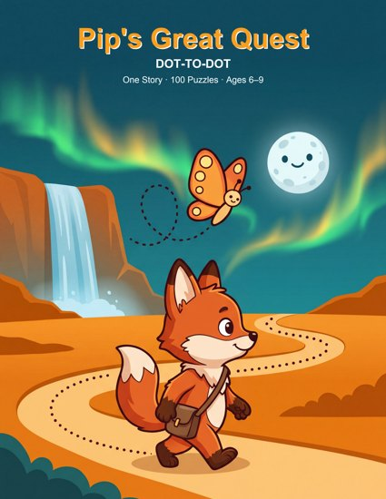

8 pages, letter size, black and white. No sign-up.
- Five real pages from the book
- Dots grow: 10, 29, 36, 51 and 73
- Solutions on the last pages
- Free to print for home and classroom use

The full book: 100 puzzles, one story
Pip's Great Quest Dot-to-Dot. Every puzzle is the next line of the adventure, from 10 dots to 100.
See the book on Amazon